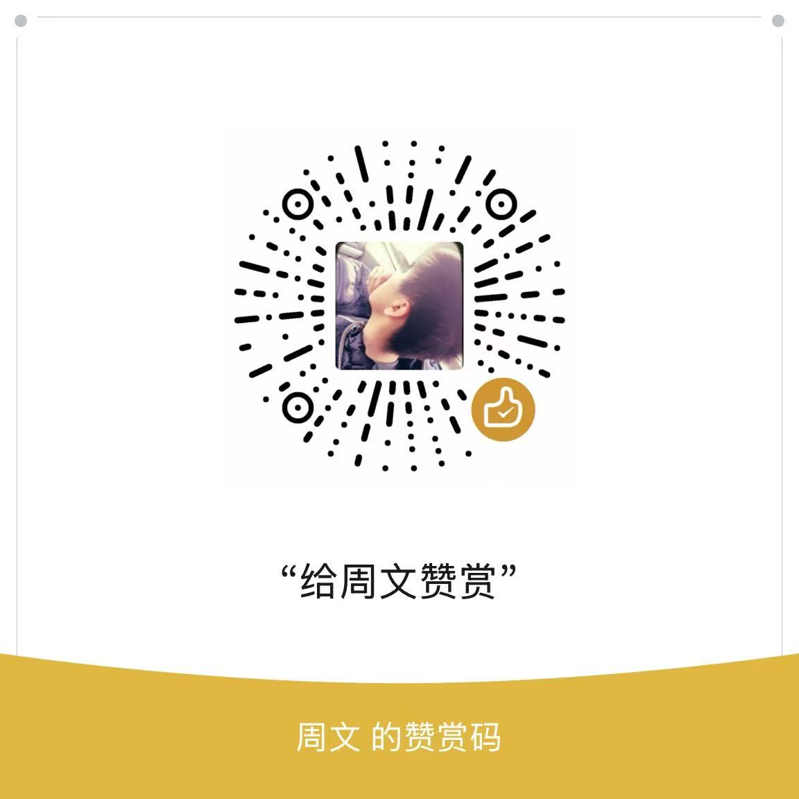

SUPPORT
支持起收笔字帖
如果这个工具对你有帮助，可以自愿支持项目。无论是否支持，所有基础字帖功能都可以继续免费使用。
支持将用于
服务器与域名
教材字表整理
书写顺序校对
打印体验维护
国内支持
微信赞赏
使用微信扫描赞赏码，付款前请核对微信显示的收款方信息。

支持完全自愿，不构成商品购买、会员订阅或公益慈善募捐。
SUPPORT
如果这个工具对你有帮助，可以自愿支持项目。无论是否支持，所有基础字帖功能都可以继续免费使用。
使用微信扫描赞赏码，付款前请核对微信显示的收款方信息。

支持完全自愿，不构成商品购买、会员订阅或公益慈善募捐。